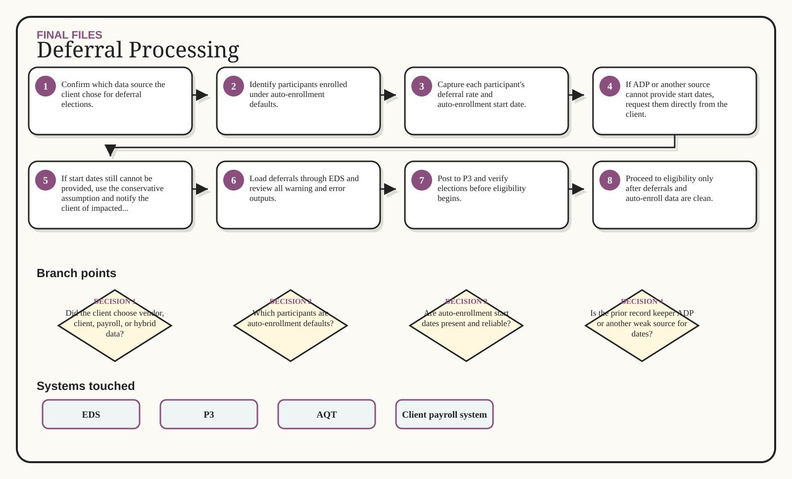

Deferral Processing
Load elections and auto-enroll state before eligibility can fire.
Multi-branch visual route

Decisions that change the route
Did the client choose vendor, client, payroll, or hybrid data?
Which participants are auto-enrollment defaults?
Are auto-enrollment start dates present and reliable?
Is the prior record keeper ADP or another weak source for dates?
Are all elections verified before eligibility runs?
Inputs -> action -> output
Client deferral data
Vendor election data
Payroll election data when needed
Auto-enrollment start dates
Confirm which data source the client chose for deferral elections.
Identify participants enrolled under auto-enrollment defaults.
Capture each participant's deferral rate and auto-enrollment start date.
If ADP or another source cannot provide start dates, request them directly from the client.
Loaded deferral elections
Auto-enroll participant list
Client notice list for missing date risk
EDS output review